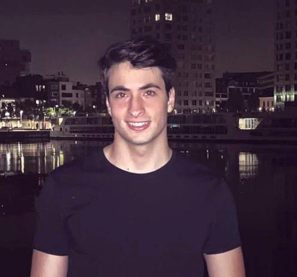

Fabio Cretella
.NET Developer · Graduaat Programmeren
Welkom op mijn portfolio. Hier vind je een selectie van projecten waar ik met passie aan heb gewerkt, van webontwikkeling tot creatieve experimenten. Ik hou ervan om dingen te bouwen die zowel mooi als functioneel zijn, en om nieuwe technieken uit te proberen.
Vaardigheden
Technologieën en tools waarmee ik voorlopig mee werk:
Over mij
Ik ben een student Graduaat Programmeren en heb een sterke passie voor het bouwen van gebruiksvriendelijke applicaties. Ik ben iemand die graag problemen oplost en altijd op zoek is naar manieren om beter te worden. Vaak ben ik iets te kritisch en focus ik me te hard op details, waardoor ik soms meer tijd besteed aan een taak dan nodig is. Naast programmeren hou ik me bezig met gitaar spelen en fitness — hobby's die mijn creativiteit en doorzettingsvermogen verder ontwikkelen. Daarnaast heb ik ook 2 honden waarmee ik naar de hondenschool ga. In de weekends werk ik als bewakingsagent. Als je nog meer wilt weten over mij, neem dan een kijkje bij mijn hobbys en ervaring.